01 Kern
Nur Elfenbein, Messing und der kupferne Einsatzkern. Beste Hauptlogo-Fassung.

Das Kernlogo bleibt ruhig. Die Mulden dürfen die drei Spielphasen sichtbar machen, solange sie nicht wie Roulette oder ein Ladeindikator wirken.

Von der reinen Kernmarke bis zur mutigen Tischsignatur. Variante 03 ist meine Empfehlung für Kartenrücken, Brett und Intro.
Nur Elfenbein, Messing und der kupferne Einsatzkern. Beste Hauptlogo-Fassung.

Acht Mulden werden nur als warme Materialpunkte angedeutet. Sehr sicher, aber weniger erzählerisch.
Messing für Trumpf, Pflaume fürs Pochen, Salbei fürs Ausspielen. Farbe erklärt das Spiel.
Vier Farbtöne wechseln rundum. Lebendig, aber als Hauptlogo schon nah an Spielzeug oder Roulette.
Die farbigen Mulden sind eine Produktsprache. Sie gehören auf Karten und Brett, nicht zwingend in jede Wortmarke.